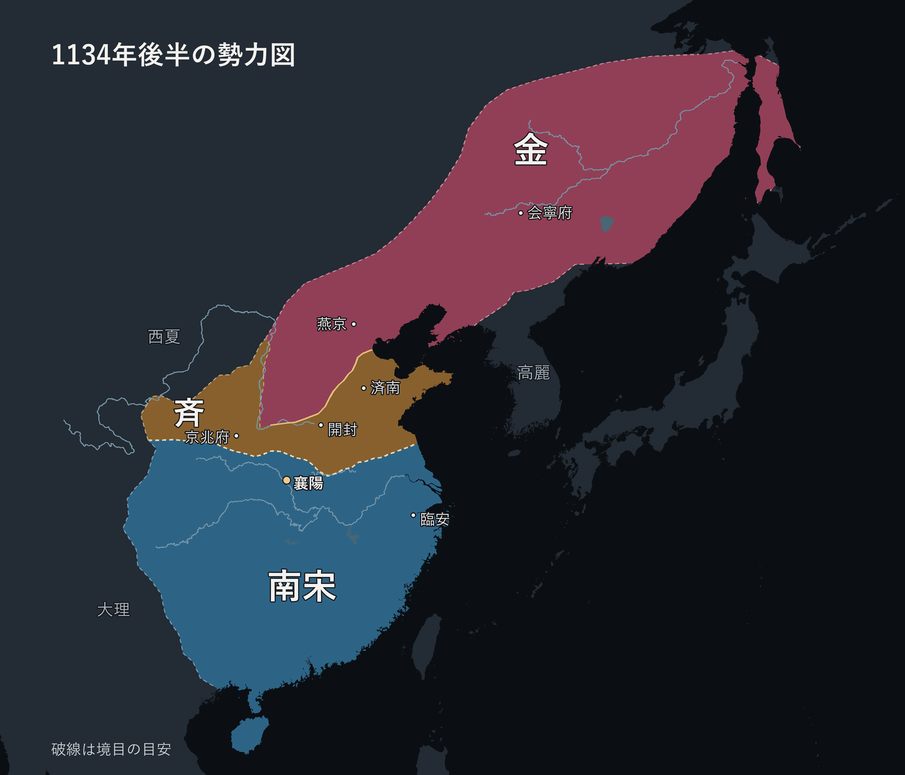
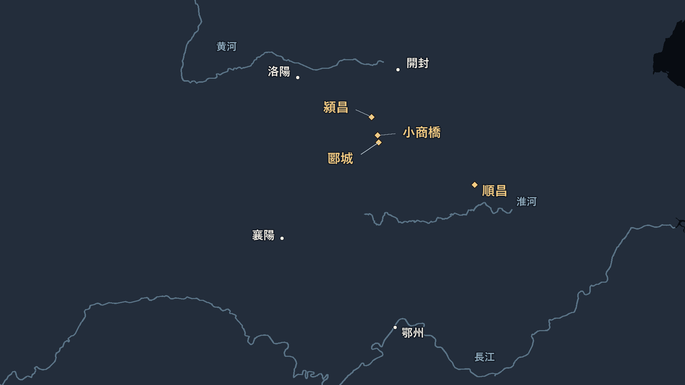

年表
月日は当時の暦。紹興十一年十二月の処刑は、西暦では1142年初頭にあたる。
| 年 | 出来事 |
|---|---|
| 1103 | 岳飛が相州湯陰に生まれる。 |
| 1115–1125 | 金の建国、宋金同盟、遼の滅亡。 |
| 1122 | 岳飛が劉韐の募兵に応じる。 |
| 1126–1127 | 開封が陥落し、徽宗と欽宗が北へ連れ去られる。趙構が商丘で即位。 |
| 1128–1133 | 宗沢の死、建康の回復、国内の武装勢力との戦い。 |
| 1134–1137 | 襄陽六郡を奪回し、洞庭湖の楊么を鎮圧。諸軍の統合をめぐって対立。 |
| 1138–1140 | 第一次和議で南宋が旧領の一部を受領。金が再侵攻し、岳飛軍が河南で戦う。 |
| 1141–1142 | 淮西救援、軍権の再編、岳飛の裁判。宋金が再び和議を結ぶ。 |
| 1162以降 | 孝宗が岳飛の旧官を回復。のちに武穆の諡号、鄂王の追封。 |
時代背景と南宋の成立
遼・北宋・金の関係
北宋の北には契丹の遼、西北には西夏がいた。現在の北京にあたる燕京は、遼が支配する燕雲十六州の一部だった。澶淵の盟で宋は遼に毎年銀十万両と絹二十万匹を送り、両国は百年ほど大規模な戦争を避けた。宋と西夏の間にも別の国境と講和があった。
1115年、女真の完顔阿骨打が金を建てた。金が遼を圧迫すると、北宋は燕京を手に入れる機会と見た。趙良嗣らの交渉を経て、宋は金と海上の盟を結ぶ。1122年、童貫らの宋軍は燕京への攻撃に苦戦し、城を取ったのは金軍だった。1123年に宋は交渉で燕京と周辺の州を受け取ったが、金は引き渡しに先立って官吏や富裕層、財貨などを移していた。
旧遼の将・張覚が金から宋へ移ると、金は宋を追及した。別の旧遼の将・郭薬師は宋の燕京防衛に加わっていたが、金の侵攻時に金側へ移った。領土の分け方と帰順者の扱いで対立するなか、1125年に金が遼の天祚帝を捕らえ、その年の末に宋へ攻め込んだ。
開封の二度の包囲と靖康の変
金軍は東西に分かれ、宗望は首都・開封へ、宗翰は太原方面へ向かった。侵攻のさなかに徽宗は退位し、長男の欽宗が即位した。宋は太原・中山・河間の割譲を約束するなどして最初の開封包囲をしのいだ。欽宗の弟・康王趙構は、この交渉で一時金軍の陣営に人質として入った。
開封から金軍が引いた後も、太原は戦い続けた。宋は首都防衛と太原救援に兵を割く必要があり、救援軍が敗れて1126年に太原が落ちた。やがて金軍は再び開封を包囲し、城を破る。1127年、徽宗と欽宗は皇族らとともに北へ連れ去られた。この一連の出来事を靖康の変と呼ぶ。
高宗の即位と朝廷の移動
金は旧宋官僚の張邦昌を大楚の皇帝に立てた。金軍の退去に伴い、張邦昌が迎えた元祐皇后の孟氏は、城外で諸軍を集めていた趙構に宋の皇統を継がせた。趙構は1127年、当時「南京」と呼ばれた応天府（現在の河南省商丘）で即位した。後世の区分では、この即位を南宋の始まりとする。
1129年、金軍が揚州に迫ると、高宗は長江を渡って杭州へ移った。杭州では武将の苗傅・劉正彦が兵変を起こし、高宗を幼い息子に譲位させた。諸将が動いて高宗は復位したものの、金軍は長江を越えて浙江まで進んだ。1130年の正月、高宗は海上の船におり、のちに温州へたどり着いた。朝廷が臨安（杭州）に腰を据えるのは1138年だった。
朝廷は北宋軍の残存部隊を集め、地方の武装勢力を討伐したり、帰順させて守備に使ったりしながら軍を立て直した。各地に守備を任せる鎮撫使を置き、岳飛も1130年に通州・泰州の鎮撫使になった。朝廷は兵力を必要とし、地方の勢力も食糧や活動の拠点を必要とした。戦況が変わると、帰順した部隊が離反することもあった。
入隊と長江防衛
岳飛は1103年に相州湯陰に生まれた。字は鵬挙。周同から弓を習い、左氏春秋や孫武・呉起の兵法を好んだ。1122年、劉韐が募った敢戦士に加わる。初期の戦歴には、部下を商人に変装させて敵の陣営に送り、自分は騎兵で敵を誘い出し、陶俊・賈進和を捕らえたという逸話がある。
1127年、下級武官だった岳飛は、高宗みずから兵を率いて黄河を渡るよう意見書を出し、職分を越えたとして罷免された。張所に採用されて王彦の配下となったが、指揮をめぐって対立した。その後、宗沢のもとで開封防衛に携わる。宗沢は岳飛の戦いぶりを認めつつ、野戦を好みすぎるとして陣図を与えたという。
靖康の変の後、金軍の主力が北へ引き揚げ、南宋側が開封を守った。1128年に宗沢が死ぬと、杜充がその守備を引き継いだ。杜充はやがて岳飛らを伴って建康に移り、金軍が長江を渡った後に降伏する。岳飛は広徳・鍾村を経て宜興に移り、牛頭山で夜間に金軍を攪乱し、龍湾や新城で交戦した。1130年に建康（現在の南京）を回復すると、建康の守備と淮河方面の増兵を求めた。
楚州は今の江蘇省淮安市の淮安区あたりで、淮河と運河が交わる方面にあった。泰州はその南東、今の江蘇省泰州市の海陵区あたりで、長江の北側にある。岳飛が受け持ったのは泰州と、その東の通州（現在の南通方面）。1130年、そこから北の楚州へ救援に向かった。
楚州を金軍が攻めると、朝廷はまず張俊に救援を命じた。張俊が辞退したため岳飛が出動し、劉光世が岳飛を支援するよう命じられた。岳飛は途中の承州方面で勝ったものの、援軍は前進せず、楚州が落ちた。岳飛は泰州に引き返したが、守り切れず住民を砂州へ渡らせ、後衛を務めた。
1131年、南宋の東部を担う大将の張俊が、江淮で勢力を広げた李成の討伐を指揮した。岳飛はその先鋒。李成軍の馬進を破った功績について、張俊は岳飛の働きが最も大きいと報告した。敗れた李成は北へ逃れ、劉豫の斉に入った。
1132年の曹成戦
曹成は江西から湖南へ移り、道州（今の湖南省道県方面）と賀州（今の広西チワン族自治区賀州方面）を押さえた。岳飛は朝廷から潭州（今の長沙）の長官代理と、湖南東部の軍事を扱う役目を任される。最初の指示は曹成を帰順させることだった。湖南東部の茶陵で帰順を求めたが、曹成は応じず、岳飛は討伐の許可を得た。
太平場の奇襲には、岳飛が捕らえた間者を利用したという逸話がある。部下が兵糧の不足を告げると、岳飛は間者に聞こえるよう、いったん茶陵に戻ると口にした。間者をひそかに逃がすと、報告を受けた曹成は翌日に追撃しようとした。岳飛軍はその前に山道を進み、夜明け前に太平場の砦を落とした。
太平場を失った曹成は北蔵嶺・上梧関へ移り、岳飛にそこを奪われると、尾根に沿って砦を連ね、自身は蓬頭嶺で抵抗した。岳飛軍がここも破ると、曹成は連州へ退いた。岳飛は張憲・徐慶・王貴を別々の方面へ出し、散った兵に投降を呼びかけた。曹成本人は逃れた先で韓世忠側の働きかけを受け、朝廷に降った。双方の正確な兵数は分からない。
岳飛軍も莫邪関で反撃を受けた。曹成の部将・楊再興が陣に突入し、部将の韓順夫と岳飛の弟・岳翻を討ったと伝わる。韓順夫は馬を降りて鎧を脱ぎ、酒を飲んでいたという。曹成が敗れた後、楊再興は張憲に捕らえられ、岳飛の部下になった。追いつめられて谷へ飛び込み、張憲に岳飛に会わせてくれと頼んだという逸話がある。のちに楊再興は金との戦いで小商橋に倒れた。
1133年には高宗の命で、江西南部の虔州・吉州方面で彭友らを鎮圧した。岳飛は首謀者以外の住民まで処罰しないよう願い出た。この年、高宗は「精忠岳飛」の旗を授けた。
岳飛の地位と指揮範囲
南宋初期の張俊は、趙構が即位する前からその軍に属した古参の大将。1129年の兵変で高宗の復位に加わり、御前右軍都統制となった。1131年の李成討伐では張俊が総指揮を執り、岳飛が先鋒を務める。1141年に中央へ移ったときも、張俊は樞密使、岳飛は樞密副使だった。文官出身で諸軍の上に立つ都督の張浚は別人。
| 時期 | 岳飛が任された範囲 |
|---|---|
| 1122年 | 真定方面の臨時募兵に応募し、小隊を率いる。 |
| 1126–1128年 | 下級武官から部隊の指揮官へ。開封全体の守備は宗沢と後任の杜充が担当し、岳飛は留守司の統制としてその配下にいた。 |
| 1129–1130年 | 杜充の配下で長江防衛に従事。建康の回復後、通・泰鎮撫使兼泰州知州となり、二州方面の守備を任される。 |
| 1131年 | 張俊の先鋒から、張俊の神武右軍の副統制へ。その後、神武副軍の都統制となり、一軍の長に上がる。 |
| 1132–1133年 | 湖南東部で曹成討伐、江西南部で彭友らの鎮圧を任される。1133年に沿江の防衛職と神武後軍都統制を兼ね、複数の将が配下に入る。 |
| 1134–1135年 | 節度使となり、鄂州を拠点に襄陽と長江中流方面を担う。洞庭湖の鎮圧で、水上戦に慣れた兵も軍に取り込む。 |
| 1136–1140年 | 宣撫副使を経て宣撫使。長江中流を担う方面軍司令官。1137年には劉光世の旧軍を配下に入れる案が出るが、撤回された。 |
| 1141年 | 樞密副使。肩書は中央の軍政高官になり、現地で自軍を直接率いる権限は離れる。その年に罷免された。 |
1132–1133年は昇進の転機。 長江流域の諸州を移動できる武装勢力は、成立したばかりの南宋にとって大きな脅威だった。岳飛は討伐と投降の受け入れを任され、戦功が一軍の指揮と沿江の防衛につながった。1134年の襄陽奪回ではさらに、河南へ出る足場を確保し、鄂州から長江中流を守る常設の任務を担うようになった。
襄陽・洞庭湖と岳飛軍
1134年の襄陽六郡
金は1130年、元宋官僚の劉豫を立て、北宋旧領の一部を斉に統治させた。劉豫の配下となった李成が襄陽方面に進出し、1134年、岳飛は襄陽・随・郢・唐・鄧・信陽軍を奪回した。斉の軍に金軍も増援として加わった。ここで信陽軍の「軍」は地名に付く行政区分を指す。

李成が川沿いに騎兵、平地に歩兵を置くと、岳飛は王貴の長槍歩兵を川沿いへ、牛皋の騎兵を平地へ回した。奪回後には営田による軍糧確保を提案し、牛や食糧に困る住民への公費支給、滞納分の免除、流亡した住民を呼び戻した成果による地方官の評価を求めた。
襄陽から北へ進めば河南に出られ、漢水を下れば長江中流に通じる。岳飛は漢水が長江に合流する付近の鄂州（現在の武漢市武昌方面）を拠点とした。東では別の軍が淮河と長江下流を守り、西では呉玠らが四川・陝西方面で金と戦った。襄陽は中央方面の防衛と北進の両方に関わる拠点だった。
誰と戦っていたか。 1130年の建康・楚州では金軍と直接戦った。1131年の李成はまだ独自勢力で、敗れてから斉に降った。曹成や彭友は地方の武装勢力。1134年の襄陽六郡では斉の李成に加え、鄧州で金将の援軍とも戦った。斉は1137年に金が廃し、1140年には岳飛が金軍と再び直接戦った。
李成の軍。 李成は宋の弓手から武官となり、自分のもとに兵を集めて江淮に勢力を広げた。斉ができる前の1129年にも、金軍と合流して烏江を攻めた。斉に降ってからは開徳府の長官などを務め、斉の軍を指揮して宋を攻めた。斉の廃止後は金に仕え、1140年の再侵攻では宋の李興の軍が疲れるまで待って撃破し、洛陽方面を取った。個々の部隊の出身や、降伏時にどれだけ兵を連れていったかは不明。
1135年の洞庭湖
楊么の軍。 洞庭湖の周辺で鍾相が起こした反乱を継いだ地方勢力。湖畔の住民を基盤に、黄佐や楊欽らの頭目がそれぞれの部隊や砦を持っていた。楊么は斉と連絡を取り、湖から川を下って、陸路を進む李成と合流する構想があったという。楊么が斉から正式な官職を受けたかは不明。
楊么の勢力は湖上の船を使い、官軍は苦戦していた。岳飛は黄佐・楊欽らを帰順させ、水上戦の知識と人員を取り込んだ。大きな筏で水路をふさぎ、草木で車船の駆動部を止め、浅瀬へ誘い込んだという。牛皋が楊么を捕らえ、鎮圧後は老弱を帰し、戦える者を軍に編入した。
1136–1137年の北進と指揮権
1136年、王貴は虢州、楊再興は長水方面に進み、太行山方面の勢力とも連絡した。岳飛が母の喪で離任を求め、朝廷の命で職務に復帰したのもこの時期。岳飛の北伐を四回と数える整理では、1134年の襄陽、1136年の二つの攻勢、1140年の河南を数える。
1137年、劉光世の離任後に王徳・酈瓊らを岳飛の指揮下に置く案がいったん認められたが、撤回された。都督の張浚と後任人事をめぐって対立した岳飛は、母の喪中に廬山へ退いた。のちに酈瓊は部隊を率いて劉豫に降る。同年、金は斉を廃した。岳飛が偽の密書で金と劉豫の仲を裂いたという逸話があるが、斉の廃止につながったかは不明。
軍の編成と規律
岳家軍は岳飛が率いた軍を指す呼び名で、公的な名称は時期によって変わる。郾城では背嵬・遊奕が出撃し、潁昌では踏白・選鋒も別の役割を担った。重い鎧で坂や堀を越える訓練を行い、民家の物を取らないよう規律を徹底した。岳飛は病兵を見舞い、戦死者の家族に手当をし、作戦前には諸将と相談した。「山を動かすのは易しく、岳家軍を動かすのは難しい」は敵側の評判として伝わる言葉。
第一次和議と1140年の北伐
1138–1140年の宋金関係
1138年に第一次紹興和議がまとまり、1139年に宋は河南・陝西方面の旧領の一部を受け取った。岳飛は和議に懐疑的で、和議後の恩賞を辞そうとした。金では和議を進めた撻懶が失脚し、宗弼に殺された。1140年に金は四方面から再侵攻し、宗弼は開封へ入った。岳飛の河南進出には、前年に交渉で得た土地を取り返す意味もあった。
河南・陝西を受け取った宋には、守備兵を配置し、現地へ兵糧を運ぶ仕事が残っていた。河南へ兵を回せば、淮河や長江中流に置いていた軍が手薄になる。西の川陝でも戦いが続いており、河南だけに兵を集められる状況ではなかった。
1140年の戦闘と各部隊の動き

| 旧暦 | 場所と経過 |
|---|---|
| 五月～六月 | 開封・順昌。 宗弼が開封に入り、劉錡が順昌を守る。六月、高宗は李若虚を岳飛のもとへ遣わした。 |
| 閏六月末～七月初め | 鄭州・中牟・洛陽。 岳飛軍の別働隊が各地で戦う。梁興・董栄らは黄河以北の勢力と連携し、垣曲方面などで動いた。 |
| 七月八日 | 郾城。 敵騎兵が北から接近したとの報告を受け、岳飛は背嵬・遊奕の騎兵を出した。戦闘は日暮れまで続き、金軍が退いた。敵は一万五千余騎と見積もられたが、実数は不明。 |
| 七月十日 | 郾城北・五里店。 王剛（別表記は王綱）が騎兵五十余で先に出て敵と遭遇し、岳飛も部隊を出した。八日とは別の戦闘。 |
| 七月十三日前後 | 小商橋・臨潁。 楊再興が小商橋で戦死した。少数の騎兵で戦ったと伝わる。近隣では張憲らも部隊を動かしていた。 |
| 七月十四日 | 潁昌。 金軍が西門外に布陣した。董先の踏白軍と胡清の選鋒軍が城を守り、王貴の遊奕軍と岳雲の背嵬軍が出撃した。姚政も戦いに加わり、劉錡は雷仲を太康へ向かわせて金軍を牽制した。 |
| 七月後半 | 郾城から撤退。 朝廷の命令が重なり、岳飛は帰還した。蔡州方面に部隊を置き、自身は親兵と順昌経由で淮河を渡った。潁昌・蔡州・鄭州などは金側に戻った。 |
戦果の数字と戦い方
郾城の騎兵。 金の重装騎兵が三騎で一組を作り、岳飛が兵に馬の脚を斬らせたという逸話がある。騎兵をつないでいたか、馬の脚を狙ったかは確証がない。
潁昌の死者数。 金軍の死者は五百余人とも五千余人ともいわれ、実数は不明。金の騎兵三万余や岳雲の騎兵八百も、確かめられた人数ではない。
撤退と朱仙鎮の伝承
朝廷の命令と戦場の状況
六月、高宗は李若虚を岳飛のもとに遣わした。進軍を止めるためだったのか、現地での判断を岳飛に委ねたのかは見方が分かれる。七月には朝廷が帰還を繰り返し命じ、岳飛軍は郾城から撤退した。
張俊の軍は南に戻り、劉錡の側は金軍を牽制していた。朝廷は深入りを禁じ、岳飛の軍内にも帰還を求める声があった。秦檜が諸軍を先に帰し、岳飛軍だけでは深入りできないと論じたという話もあるが、撤退を決めた経緯には不明な点が残る。岳飛軍が進軍を装ってから撤退し、途中で追撃されたとも、現地の住民が岳飛を引き留め、撤退に伴って退避したとも伝わる。
岳飛軍の前進と同時期に、別の方面では防衛線が後退していた。開封に達すること、城を攻略すること、その後も兵と食糧を置いて維持することには、それぞれ異なる条件が要る。郾城・潁昌で勝利を報告した一方、戦役が終わると金が河南の支配を回復した。撤退がなければどこまで進めたかは確定できない。
朱仙鎮・黄龍府・金字牌
- 朱仙鎮での五百騎
- 開封近くの朱仙鎮で、背嵬の騎兵五百が宗弼軍を破ったという逸話。岳飛軍が朱仙鎮に到達したか、そこで交戦したかは確証がない。
- 黄龍府で酒を飲むという発言
- 岳飛が、黄龍府まで攻め込んで酒を飲もうと語ったという逸話。黄龍府は河南の戦場から遠く離れた金の北方にあった。
- 一日に十二の金字牌
- 帰還命令が重ねて出された。一日に十二枚の金字牌が届いたという話は、枚数や届いた間隔に確証がない。
軍権再編・裁判・第二次和議
1141年春の淮西救援と四月の軍権再編
1141年春、金軍が淮西へ進んだ。三月に岳飛は舒州を出発し、定遠で金軍の退去を聞いて舒州へ戻った。その間に金は濠州を落とし、張俊の配下は伏兵を受け、韓世忠も戦況を立て直せなかった。当時、高宗は岳飛の援軍をねぎらったが、後の裁判ではこの救援の遅れが問われた。
四月、韓世忠と張俊が樞密使、岳飛が樞密副使となった。朝廷は三つの宣撫司を廃止し、部隊の指揮官を御前統制官とし、駐屯地は従来どおりとした。岳飛は中央軍政の高官になる一方、従来の軍を現地で直接指揮する立場を離れた。六月には張俊と楚州方面へ赴き、韓世忠軍の処遇や背嵬の扱いをめぐって対立した。岳飛は韓世忠に危険を知らせたという。
告発から処刑まで
- 王俊反乱容疑で告発張憲
- 張俊拘束張憲
- 秦檜審理担当を交代何鑄から
万俟卨へ - 韓世忠証拠を問う
（伝承）秦檜 - 高宗
宋の朝廷最終処分を命じる岳飛・張憲・岳雲
| 旧暦 | 経過 |
|---|---|
| 八月 | 秦檜側の弾劾を経て、岳飛は樞密副使を罷免された。 |
| 九月 | 王俊が、張憲は襄陽を拠点に反乱を計画したと告発。張俊が張憲を拘束した。 |
| 十月 | 岳飛と張憲が大理寺の獄に入る。何鑄と周三畏が審理を担当。何鑄は反逆の証拠を得られず、秦檜は審理の担当を万俟卨に替えた。 |
| 十一月 | 金の使節が来て、和議と盟誓がまとまる。 |
| 十二月 | 岳飛は大理寺で賜死、張憲と岳雲は市で斬られた。家族は広南に流され、幕僚も処罰を受けた。岳飛が死に至った具体的な方法には後世の伝承がある。 |
問われたこと。 張憲の嫌疑は、軍を襄陽へ動かして朝廷が岳飛を鎮撫に遣わすよう仕向けようとしたこと。岳飛には淮西への出兵が遅れたことと、自分が宋の太祖と同じく三十歳で節度使になったと述べたことなどが問われた。朝廷は繰り返し出兵を促した。李若樸・何彦猷らは死刑に異議を唱えた。
岳雲の量刑。 当初は徒三年とし、官位を一階下げ、罰金を科して職を解く案が出ていた。最終の命令で張憲とともに死刑となった。岳雲が岳飛の実子か養子かは、記述が分かれる。
莫須有。 韓世忠が秦檜に証拠を問い、秦檜が岳雲と張憲の書状に触れながら「莫須有」と答えたと伝わる。韓世忠はその三字で天下を納得させられるのかと返したという。実際に裁判で問われた嫌疑は上記のとおり。
1141–1142年の第二次紹興和議
東では淮河の中流を境とし、宋は唐・鄧を割譲した。西では商州・秦州の一部を割き、大散関を境とする画定が進んだ。宋は金に臣下の礼をとり、毎年銀二十五万両と絹二十五万匹を納めることになった。1141年の合意に続き、1142年にかけて使節の往来と境界の画定が進んだ。この年、高宗の母の韋太后が帰還し、徽宗と二人の皇后の棺も宋へ届いた。
和議と処刑の関係。 宗弼が秦檜に書簡で岳飛の殺害を要求したという話には確証がない。秦檜は弾劾や審理を主導し、岳飛の賜死は朝廷が命じた。高宗の防衛方針と岳飛の攻勢の違いに加え、朝廷が軍を直接統制しようとしていたことも、処刑の背景として考えられる。
捕虜となった皇族の帰還や後継者の選定は、当時の政治課題だった。高宗が兄の欽宗の帰還を恐れて岳飛を処刑したという説明は推測にとどまる。
復官と後世の岳飛像
復官・改葬・追封
1155年に秦檜が死んだ後、岳飛の官位を回復する議論が起きた。1162年に孝宗が即位すると、旧官を回復し、礼に従って改葬するよう命じた。その後、諡号の武穆を贈られ、鄂王に追封された。裁判から時間がたつにつれ、処刑は冤罪として語られるようになった。
旗・刺青・『満江紅』
| 言葉 | 登場する場面 |
|---|---|
| 精忠岳飛 | 1133年に高宗が岳飛へ授けた旗の文字。 |
| 盡忠報國 | 取り調べの際、岳飛が何鑄に見せたという背の刺青の文字。 |
| 精忠報國 | 後世の小説で、母が岳飛の背に彫る文字。 |
「怒髪衝冠」で始まる『満江紅』は、岳飛の作として広く伝わる詞。本人の作かどうかには議論が残る。元から清にかけての戯曲や小説では、岳飛の忠義を皇帝・朝廷・国・民のどこに結びつけるかも、作品ごとに変わった。
手紙・肖像・墓廟
高宗が岳飛の忠勤をねぎらった1137年の手敕が残る。同じ巻にある「十二金牌」の言葉は、約六百年後の1756年に清の乾隆帝が書き足したもの。
岳飛・韓世忠・張俊・劉光世を描いた《中興四将図》は、1204年以降の制作とみられる。巻末には1390年に四将の優劣を論じ、岳飛と韓世忠を評価した文章がある。
杭州の西湖のほとりにある岳飛の墓は、1162年の改葬の地とされる。岳王廟の前身は1221年に建てられ、現在の墓廟の配置は清代の再建に由来する。像の姿も、かつての王の装いから現在の武将姿に変わった。
人物一覧・ゲーム風評価
統率は部隊を動かす力、武力は本人の戦闘力、知力は作戦判断、政治は組織や朝廷を動かす力。Sは突出、Aは目立つ強みの目安。
宋の朝廷・方面軍
| 人物 | 所属・地位・特徴 |
|---|---|
| 高宗（趙構） | 南宋の皇帝。将の任命、軍の再編、講和を決める。 政治A。北宋崩壊後に朝廷と指揮系統を立て直した。 |
| 秦檜 | 南宋の宰相。対金講和を進め、岳飛の裁判時に朝廷の中枢にいた。 政治S。長期間にわたって政権内で主導権を維持。 |
| 宗沢 | 南宋の開封留守。都の守備を預かり、岳飛も指揮下に置いた。 統率A・政治A。開封を拠点に官軍と各地の武装勢力をまとめた。 |
| 杜充 | 南宋の文官。宗沢の後任として開封を預かり、のち建康方面の上級司令官。1129年に金へ降伏。 役職は早期の岳飛よりはるかに上。建康方面での指揮は敗戦と降伏に終わった。 |
| 張俊 | 南宋の宿将。1131年の李成討伐で岳飛の上官。1141年には軍政トップの樞密使。 統率A・政治A。複数の部隊を動かす立場に早くから就き、軍政中枢まで上がった。 |
| 張浚 | 南宋の文官・都督。1135年の洞庭湖討伐を統轄し、実戦を岳飛に任せた。1137年の軍再編にも関与。 政治A。諸軍をどう配置し、誰に預けるかを扱った。武将の張俊とは別人。 |
| 韓世忠 | 南宋の方面軍司令官。曹成を帰順させ、1141年に樞密使。 統率A・水戦A。長江下流で水軍を運用し、金軍を迎え撃った。 |
| 劉光世 | 南宋の古参の大将。1137年の退任時には、軍を誰に継がせるかが朝廷の問題になった。 官位と配下の規模で見ると、1130年代前半の岳飛より先を行く。 |
| 劉錡 | 南宋の将。1140年には順昌の守備を指揮。岳飛とは別の戦線を担当した。 統率A・知力A。城の守りを固めて金軍の大攻勢を退けた。 |
岳飛とその配下
| 人物 | 所属・地位・特徴 |
|---|---|
| 岳飛 | 北宋末の下級武官から、南宋の長江中流方面を預かる司令官、樞密副使へ。 統率S・知力A。部隊の育成、複数の将を使った広域作戦、曹成戦や洞庭湖での相手に合わせた戦い方。 |
| 張憲 | 岳飛配下の有力な部隊長。曹成戦で楊再興を捕らえ、のち岳飛・岳雲とともに処刑された。 統率A。岳飛が別働隊を任せる将の一人。 |
| 王貴 | 岳飛配下の上級指揮官。曹成戦では別方面の招降を、1140年には潁昌の守備を担当。 統率A。部隊を預けて別の地点を任せられる将。 |
| 楊再興 | 曹成の部将から岳飛の部下へ。岳飛の弟・岳翻を討ったと伝わる。1140年に小商橋で戦死。 武力A。前線で敵陣に突入する部将。 |
| 牛皋 | 独自に兵を集めて金に抗した後、宋軍に入り、のち岳飛の配下へ。 武力A。戦場で前に出る部将。方面軍全体を任された岳飛とは指揮の規模が違う。 |
| 岳雲 | 岳飛の息子。張憲の部隊に入り、1140年の潁昌戦にも登場する。 武力A。前線での戦功で知られる。 |
| 王俊 | 岳飛軍の前軍副統制。張憲を告発した。潁昌を守った王貴とは別人。 |
金・斉と独立の武装勢力
| 人物 | 所属・地位・特徴 |
|---|---|
| 宗弼（兀朮） | 金の皇族・大将。複数の戦線に関わり、1140年に南宋に対する攻勢を指揮。 統率S。現場の部隊長より上の規模で軍を動かす。 |
| 劉豫 | 宋の済南長官から、金の後援で斉の皇帝に。開封を都とし、1137年に金に廃された。 立場は皇帝で李成の上。政権の存続は金の意向に左右された。 |
| 李成 | 宋の地方武官から独立の武装勢力へ。1131年に敗れて斉に入り、正式に官職を得る。斉の廃止後は金の将。 統率A・武力A。複数の州を脅かす規模の部隊を動かし、1140年には金側で洛陽などを奪った。 |
| 曹成 | 江西・湖南を転戦した独立勢力の頭。道州・賀州を押さえ、部将の楊再興を従えた。 統率A。各地を移動する武装集団をまとめ、敗戦後も関や山地に拠って抵抗した。 |
| 鍾相 | 洞庭湖周辺の蜂起の指導者。1130年に討たれ、その後も楊么らの拠点が残った。 組織A。地域で人を集め、死後も蜂起が続く規模の勢力を築いた。 |
| 楊么 | 洞庭湖の武装勢力を率いた頭目。斉との連携を図ったという。黄佐・楊欽らも個別の拠点を持った。 水戦S・組織A。洞庭湖での評価。湖の地形と船を使い、朝廷の討伐を長くしのいだ。 |
用語解説・人名・地名
王朝・外交 ／ 軍・役職 ／ 文書・裁判・顕彰 ／ 人名 ／ 地名
王朝・外交
- 北宋・南宋
- 同じ宋王朝の時代区分。開封を中心とした時期を北宋、1127年に趙構が即位してからを南宋と呼ぶ。
- 遼・金・西夏
- 遼は契丹の王朝。金は女真の完顔阿骨打が建て、遼を滅ぼした王朝。西夏は宋・金の西北にあった別の国。
- 燕雲十六州
- 燕京（北京）や雲州（大同）を含む北方の諸州。北宋が金と組んだ背景には、この地域を得る狙いがあった。
- 澶淵の盟（せんえんのめい）
- 北宋と遼が景徳元年十二月に結んだ講和。国境の現状を守り、宋が遼に毎年銀と絹を送ることを約した。
- 海上の盟（かいじょうのめい）
- 1120年ごろに宋と金が遼を攻めるため結んだ協力関係。使節が海を渡って往来したことにちなむ。
- 靖康の変（せいこうのへん）
- 金軍による開封の陥落と、徽宗・欽宗らの連行を中心とする1126–1127年の事件。
- 大楚・斉（偽斉）
- ともに金が旧宋領に立てた政権。大楚は1127年の張邦昌、斉は1130–1137年の劉豫。「偽斉」は宋側の呼称。
- 紹興和議（しょうこうわぎ）
- 宋金間の講和。第一次は1138年の合意と翌年の旧領引き渡し。第二次は1141年の合意と翌年にかけての境界画定。単に「紹興和議」といえば第二次を指すことが多い。
- 歳幣・歳貢
- 毎年納める銀・絹など。澶淵の盟で宋から遼へ送った歳幣と、第二次紹興和議で金へ納めた歳貢では、相手・額・外交上の関係が異なる。
軍・役職
- 鎮撫使（ちんぶし）
- 南宋初期に地域の鎮圧や防衛を任せた役職。岳飛は通州・泰州の鎮撫使になった。
- 宣撫使・宣撫司
- 宣撫使は広い地域で軍事などを任された役職。宣撫司はその官署。1141年には三将の宣撫司を廃し、部隊を朝廷の指揮下に置き直した。
- 都督・統制・都統制
- 都督は複数の軍を統括する立場で、張浚が務めた。統制・都統制は軍の指揮官の職名。役職名だけで、現地のどの部隊を率いたかまでは決まらない。
- 樞密院・樞密使・樞密副使（すうみつ）
- 樞密院は朝廷で軍政を扱う機関。樞密使と副使はその高官。1141年、韓世忠と張俊が使、岳飛が副使になった。
- 節度使（せつどし）
- もとは地域の軍を統べる役職。宋代には高位の武官に授ける官号としても用いられ、官号だけで現地の指揮権は分からない。
- 岳家軍
- 岳飛が率いた軍の通称。背嵬・遊奕・踏白・選鋒などの部隊を含み、軍全体の公的な名称や指揮官の職名は時期によって変わる。
- 背嵬・遊奕・踏白・選鋒
- 部隊名。郾城では背嵬・遊奕の騎兵が出撃。潁昌では岳雲の背嵬、王貴の遊奕が出撃し、董先の踏白、胡清の選鋒が城を守った。背嵬の名は韓世忠軍にも見える。
- 営田（えいでん）・屯田（とんでん）
- 耕地を整え、農作物を軍糧などに充てる仕組み。襄陽六郡の奪回後、岳飛は営田と住民の生活再建を提案した。
- 軍（行政区分）
- 宋代の地方行政区分にも使われる字。襄陽六郡に含まれる「信陽軍」は地域の名称。
- 班師（はんし）
- 出征した軍を引き揚げること。1140年の記事では、岳飛が郾城から部隊を帰還させたことを指す。
文書・裁判・顕彰
- 奏報・捷奏
- 軍などが朝廷へ送る報告。捷奏は勝利の報告。敵兵の数や死者数には、報告者の推計や伝聞が含まれることがある。
- 御札・手敕・題跋
- 御札は皇帝からの書状、手敕は皇帝が書いた命令や伝達。題跋は作品の余白や巻末に加えられた文章。同じ巻物でも、本文と題跋の時代が違うことがある。
- 金字牌（きんじはい）
- 緊急の命令を伝える際に使う牌。
- 大理寺・刑部
- 宋の刑事司法に関わる中央官署。岳飛は大理寺で賜死となった。
- 莫須有（ばくしゅゆう）
- 韓世忠が証拠を尋ねた際、秦檜が答えたと伝わる三字。訳し方には幅があり、裁判で問われた嫌疑とは別に伝わる会話の言葉。
- 賜死（しし）・徒刑（とけい）
- 賜死は君主の命で死に処すること。徒刑は期間を定めて労役を科す刑。岳雲に出された当初の案には徒三年が含まれていた。
- 復官・諡号（しごう）・追封（ついほう）
- 復官は失った官位を回復すること。諡号は死後に贈る名で、岳飛の場合は武穆。追封は死後に爵位などを授けることで、岳飛は鄂王に封じられた。
人名
| 人物 | 役割 |
|---|---|
| 徽宗・欽宗・高宗・孝宗 | 徽宗と長男の欽宗は靖康の変で金に連れ去られた。欽宗の弟の趙構が高宗として即位。のちに孝宗が岳飛の旧官を回復した。 |
| 宗沢・杜充 | 開封の守備に関わった宋の指揮官。岳飛は宗沢のもとで戦い、後任の杜充は長江を渡った金軍に降った。 |
| 秦檜・何鑄・万俟卨 | 秦檜は和議を進めた宰相。何鑄は当初の取り調べを担当し、万俟卨が後を引き継いだ。万俟卨には異表記がある。 |
| 張俊・張浚・張憲 | 張俊は宋の武将で後に樞密使。張浚は都督を務めた文官。張憲は岳飛配下の将で裁判の被告。 |
| 王貴・王俊・王剛 | 王貴は潁昌の指揮官。王俊は張憲を告発した前軍副統制。王剛は郾城北で出撃した岳飛軍の将。 |
| 岳雲 | 岳飛の子。潁昌で出撃し、のちに処刑された。 |
| 韓世忠・劉光世・劉錡 | いずれも宋の将。韓世忠は裁判について秦檜を問いただしたと伝わる。劉光世の離任後に旧軍の処遇が問題となり、劉錡は1140年に順昌を守った。 |
| 宗弼（兀朮）・撻懶・劉豫 | 宗弼は1140年の再侵攻を指揮した金の将。撻懶は対宋和議に関わった金の将。劉豫は金が立てた斉の皇帝。 |
地名
| 地名 | 現在地・位置関係 |
|---|---|
| 東京・西京・南京 | 北宋の東京は開封、西京は洛陽、南京（応天府）は河南省の商丘。 |
| 建康・臨安 | 建康は現在の南京、臨安は杭州。高宗が朝廷を定着させたのは臨安。 |
| 郾城・潁昌・臨潁・小商橋 | 郾城は河南省漯河市方面、潁昌は許昌方面。臨潁と小商橋は両者の間の戦闘記事に登場する。 |
| 襄陽・鄂州・洞庭湖 | 襄陽は漢水沿い。鄂州は現在の武漢市武昌方面。洞庭湖は湖南省にあり、長江水系に属する。 |
| 順昌・楚州 | 順昌は現在の安徽省阜陽方面で、劉錡が守った。楚州は江蘇省淮安方面で、1130年に岳飛が救援に向かった。 |
| 江淮・淮西・荊襄・川陝 | 江淮は長江と淮河周辺、淮西は淮河西部方面、荊襄は荊州と襄陽方面、川陝は四川と陝西方面。戦線を大づかみに示す呼び方。 |
| 朱仙鎮・黄龍府 | 朱仙鎮は開封の近く。黄龍府は河南から遠く離れた金の北方の地。 |